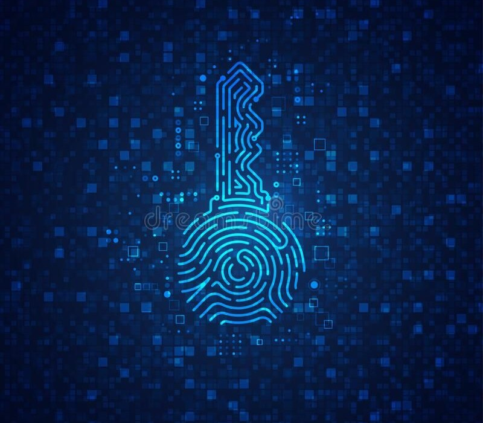

Security
Using strong encryption technique that is run via Web Crypto API. No backend database or server data
LocalVault is a small client-side offline tool for encrypting and decrypting files on your own machine. Drop a file, choose the password, and download an encrypted file or a self-decrypting HTML to decript in local browser.

Using strong encryption technique that is run via Web Crypto API. No backend database or server data
Export either a compact encrypted file or a self-decrypting HTML. The HTML file can be opened in a modern browser by someone who only has the password.
The code is plain HTML, CSS and JavaScript. You can inspect it or adapt it for specific purposes.
A password-strength meter and adjustable key-derivation settings help you pick a strong password.
Password strength: –